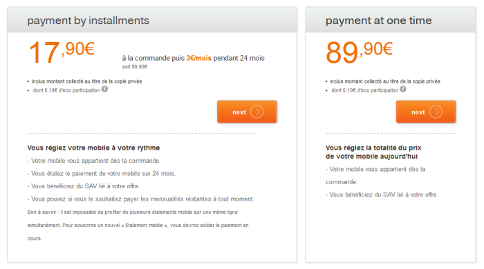
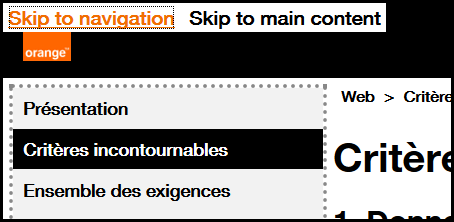

Web develop - Common navigation
Make sure that the user easily navigate within page and more generally in the website
Text of links and buttons must be accessible #
Target: everyone, especially people with visual impairments, cognitive limitations (dyslexic) or attention difficulties.
When: as of design and during development.
Description:
Make the link and button labels understandable without the context for all users and, in particular, the visually impaired. During the navigation with a screen reader, it should be possible to access the links list of the page to navigate quickly. If your page contains several “learn more” links, it will be impossible to differentiate from each other.
If it is not possible to make a link more explicit (e.g. not enough space) but the label of the current link is sufficiently clear for people having access to the screen, **a title**attribute must use to display a tooltip, containing all the necessary information, at the mouse rollover, but also to complete the title with additional content with, at choice:
- a piece of text hidden by accessible display via CSS
- by using an attribute
aria-labeloraria-labelledbycontaining all the contents oftitle(see ARIA attributes that can save you).
For example, in the image below, the two “next” links are not explicit enough for a person with visual impairments. However, when one sees the screen, the positioning makes obvious the function of each button.

In this case, add an accessible hidden content using span to complete the link label. This will not be displayed on the screen, but will be vocalized by assistive technologies.
Example:
<a href="…" title="Validate the payment by installments">Validate<span class="accessible-hidden-content"> to pay by installments</span></a>
<a href="…" title="Validate the payment in one go">Validate<span class="accessible-hidden-content"> to pay in one go</span></a>
Another solution is to use an aria-label or aria-labelledby attribute to clarify the link label (see ARIA attributes that can save you).
<a title="confirm to pay in installments" aria-label="confirm to pay in installments" href="…">confirm</a>
<a title="confirm to pay in one go" aria-label="confirm to pay in one go" href="…">confirm</a>
Checklist:
Make sure that the semantics HTML are respected:
- a link must allow to change URL, to page, to download a file, to make appear / disappear content, to go to an anchor.
- a button must allow to submit / reset a form, to open a modal window, to make appear a sub-menu, to control a media, to trigger an action via JS .
Ensure that links, out of context, give good information about the triggered action or destination.
A page must not contain multiple links with the same label but pointing to different destinations / actions.
Users’ goal:
Allow users who don’t have access to the visual context to know the destination of the link.
Particularly important for users navigating
through a list of links extracted from the page (screen readers) or software magnifying glass users who see only a fraction of the page.
Technical goal:
Making explicit link labels improves natural referencing.
Do:
Associate a link labelled “click here” with a hidden label: “order you mobile phone”.
Don’t:
“Click here” or “Read more…” links without clarification.
WCAG reference:
Warn the user when opening a new window #
Target: everyone, especially people with visual impairments, cognitive limitations or having attention difficulties.
When: as of design and during development.
Description:
Notify the user of any new window opening by mentioning it in the text of the link.
If it is not possible, use the title attribute with the whole information needed (e.g. "buy the Nokia 7510 (new window)") and add, at choice:
- the use of an icon (image with an
altindicating the opening of a new window or just "(new window)"). - a hidden piece of text in accessible display via CSS.
- an attribute
aria-labeloraria-labelledbycontaining all the contents oftitle(see ARIA attributes that can save you).
Example:
Example of an icon that indicates the opening of a new window.
Checklist:
For any link opening a new window or a new tab, a mention like “(new window)” is shown in the link label, or a “(new window)” mention is positioned off the screen via CSS (accessible hidden content).
Users’ goal:
Avoid the unexpected opening of a window, because this can disturb, disrupt, or confuse the user. In particular for persons using mobile browsers, using speech synthesis or cognitively impaired.
Do:
For any external link and opening a new window, the label could be: “Go to the orange.com site (new window)”, for a picture-link the alt attribute could be: “consult the EULA (new window)”.
WCAG reference:
Provide skip links #
Target: useful for mobile and tablet users, people with visual impairments, motor disabilities or using a device outdoors.
When: as of design and during development.
Description:
Provide skip links allowing to access directly the main page areas (navigation, content, bottom of the page, search…) with internal links pointing to anchors. (<a> tags or any HTML element with an id attribute). In very specific cases, the links can be hidden on the screen and appear only when keyboard navigation is detected.
Checklist:
When a skip link is activated, make sure the focus is correctly set (not only scrolled to the right position).
Users’ goal:
Facilitate the navigation for users using a keyboard, visually impaired, users of magnifying glass software or mobile phone.
Example:
Skip links (“Skip to navigation”, “Skip to content”) are available on this site.
To make them appear, move the focus on the top of the page by clicking on your browser’s address bar, for example, then repeatedly press the TAB key.

WCAG reference:
Ensure the user keeps control during interactions #
Target: Everyone, especially those who are visually impaired, cognitive or with attention deficit.
When: early in the design phase and during development.
Description:
- Do not induce a change of context when setting the focus on an element, entering data or activating a form element without this change being predictable (button) or the user has been warned.
- Do not impose on the user a time limit to perform an action. This must be able to extend a time limit if appropriate.
- If keyboard shortcuts based on a single key is available, it is necessary to take some measures to avoid possible conflicts with assistive technology.
- The user must have control on the contents opening on hover or focus.
Checklist:
- Regarding shortcuts, make sure that at least one of the following statements is true:
- turn off: the shortcut can be turned off.
- modification: a mechanism is available to remap the shortcut to use one or more successive non-printable keyboard characters (e.g. Ctrl, Alt, etc).
- focus activation: the keyboard shortcut for a user interface component is only active when that component has focus.
- If content appears on mouse over or focus (eg tooltip), the user must be able to:
- Hide this new content without the need to move the pointer or focus; eg with the esc. key (useful especially for screen magnifier users).
- Move the mouse pointer on this new content without it disappearing.
- If actions are to be performed in a timely manner, verify that the user can extend or remove this restriction.
Exception: if the additional content does not mask informative content, the criterion is not applicable",
User Objective: give all users control of the context changes related to their action and give them the necessary time to perform an action.
Example: a form must have a send button. It should not be sent automatically after the user input.
WCAG reference:
- 1.4.13 Content on Hover or Focus
- 2.2.1 Timing Adjustable
- 3.2.1 On Focus
- 3.2.2 On Input
- 2.1.4 Character key shortcuts
Provide multiple access and location #
Target: Everyone, especially people who are visually or cognitively impaired.
Description:
Give the user several ways to locate and access specific content, locate the web page being viewed in a set of pages. When the page is a step in a process where the pages follow one after the other, providing a way to locate can be ignored.
Checklist:
Make sure that several systems allow you to locate and access a page or content in the site & nbsp ;: a search tool on the entire site, a site map, a global navigation menu, a breadcrumb trail...
User Objective:
Allow all users to find their way in order to access more easily all the content of the site.
Do:
The site offers, at the same time, a complete and precise main navigation and a breadcrumb trail.
Don't:
An application provides a parcel navigation menu and no other way for the user to navigate the pages or locate where the current page is in the tree.
WCAG reference:
Allow to know the result of a user interaction with status messages #
Target: Everyone, especially people with visual, cognitive and attention deficit disorders
When: during conception to content writing and development.
Description:
Provide the user with status messages that give him feedback on the action he has just completed.
Checklist:
Contextual messages must be perceived by anyone using a AT (speech synthesis) without taking focus on the message.
A status message or pop-up message can be & nbsp ;:
- a message that gives the user information on the result of an interaction (ex: Your request has been taken into account)
- a waiting message that indicates that the triggered action is running and indicates an approximate wait time
- a message that gives information on a change of context
User Objective:
For all users, have feedback on the essential actions it performs.
WCAG reference:
Allowing animations control #
Target: people with visual impairments, reading, attention or understanding difficulties, people with seizure disorders.
When: when designing the service and graphic design.
Description:
All moving, refreshed, flashing or scrolling content (eg a carousel) must be able to be stopped, hidden or paused by the user if this animation lasts more than 5 seconds.
Also, avoid as much as possible flashing content and sudden brightness changes (see The logo of the Olympics causes seizures).
Therefore, it is necessary to pause the animation when loading the page or to give a way to stop or pause the animation, the update or the flashing via a button for example.
Example:

A carousel that scrolls automatically must have a mechanism that allows the scrolling to be paused, for example a "pause" button.
The mechanism must allow the user to interact with the rest of the page, stopping or pausing via an event activated only on receive focus or hovering the mouse is not sufficient.
WCAG reference: